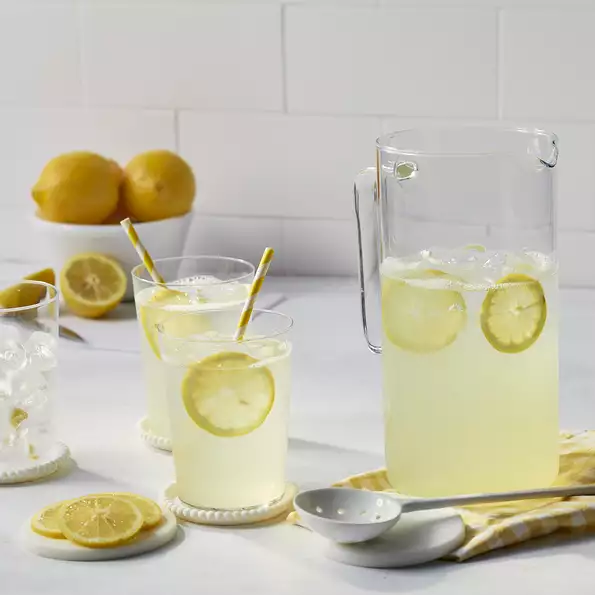

Old-Fashioned Lemonade

Description
This classic lemonade recipe is the one my mom used to make for me when I was little.
Ah, the taste of summer! It's the perfect combination of sweet and tart. When using
a clear pitcher, adding a few of the juiced lemon halves makes it look prettier.
Ingredients
- 6 lemons
- 1 Cup white sugar
- 6 Cups water, or more as needed
Steps
- Juice lemons, you should have 1 cup juice.
- Combine juice, sugar, and water in a 1/2-gallon pitcher. Stir until sugar dissolves. Taste and add more water if desired.
- Chill and server over ice.